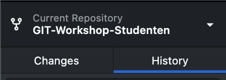

Tags markeren specifieke punten in de Git-geschiedenis, meestal gebruikt om versies van de code vast te leggen.
Stap 1: Open de geforkte repository in GitHub Desktop en navigeer naar het ‘History’ tabje.

Figuur 1: TabjeHistory in GitHub Desktop
Stap 1.1: Klik met de rechtermuisknop op de laatste commit en druk op ‘Create Tag…’.
Stap 1.2: Geef de Tag een naam, bijvoorbeeld: v1.0. Klik daarna op ‘Create Tag’ en push de wijziging door rechtsboven op ‘Push Origin’ te klikken.
[!success] Goed gedaan! Je hebt succesvol een tag aangemaakt!
Releases zijn gekoppeld aan tags en bevatten aanvullende informatie zoals release notes en bestanden voor distributie van een officiële softwareversie.
Stap 1: Navigeer naar de geforkte repository op de GitHub website.
Op de pagina Code onder het kopje Releases staat nu: ‘1 tags’
Stap 1.1: Klik op de blauwe tekst: ‘Create a new release’
Stap 1.2: Selecteer de tag die bij de release hoort (bijvoorbeeld v1.0)
Stap 1.3: Geef de release een titel en een eventuele omschrijving. Klik daarna op 'Publish Release.
[!success] Gereleased! Op de pagina Code onder het kopje Releases staat nu: ‘v1.0 (latest)’
[!success] Gelukt
- Je hebt een tag gemaakt!
- Het is gelukt om een release te publiceren!